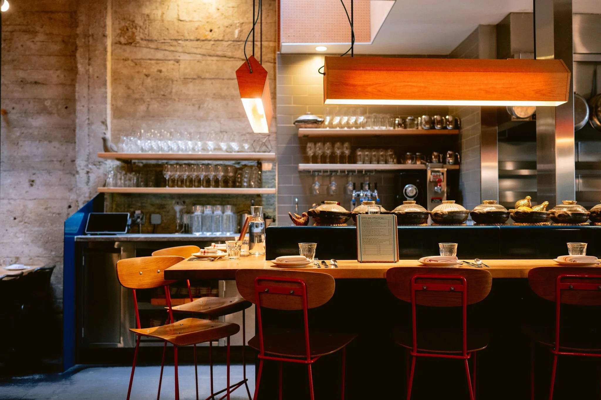
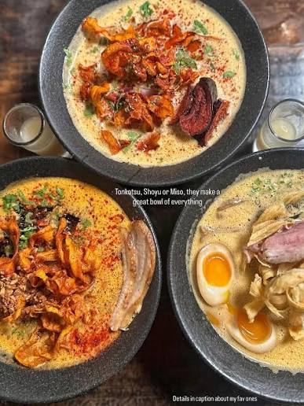
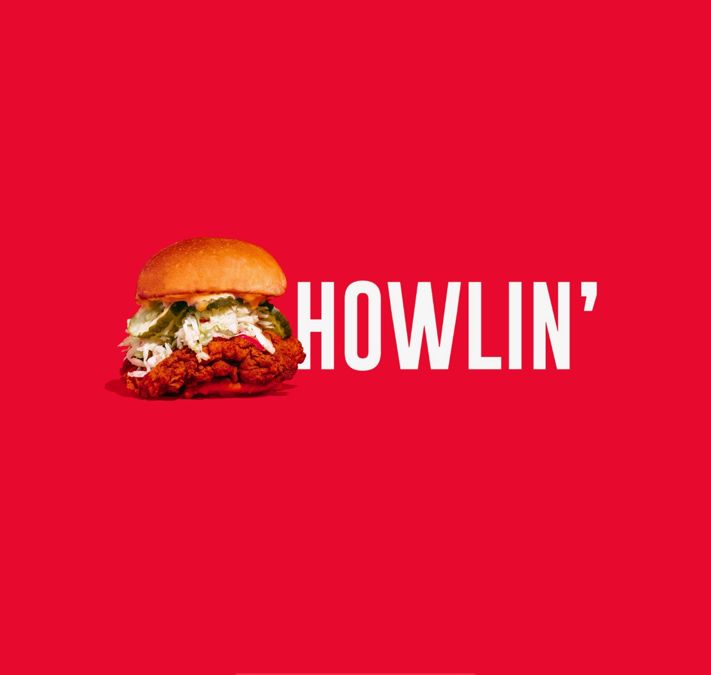
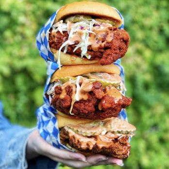
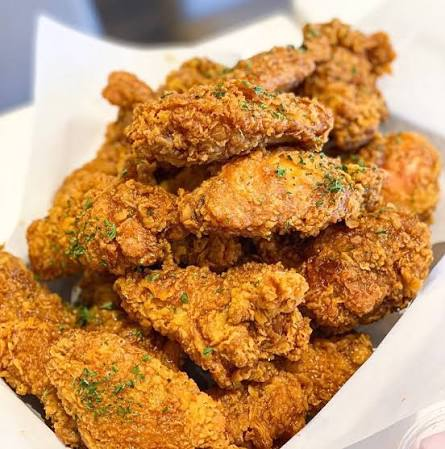
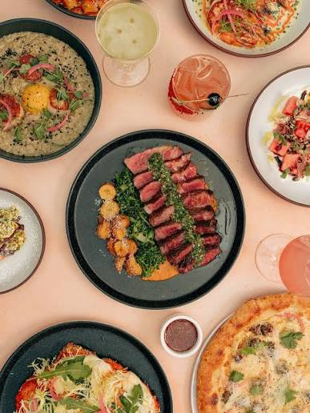
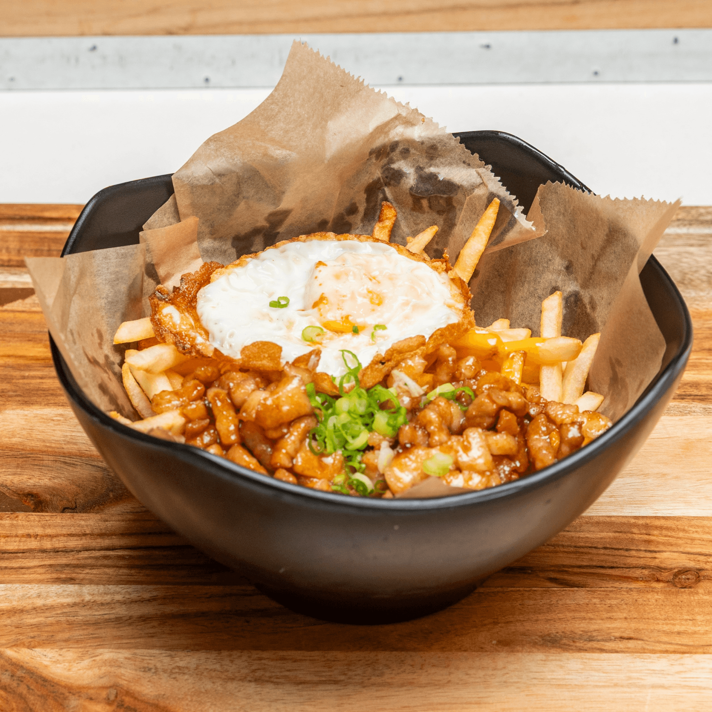
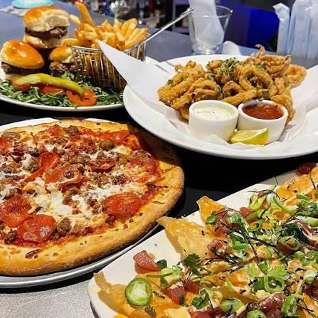
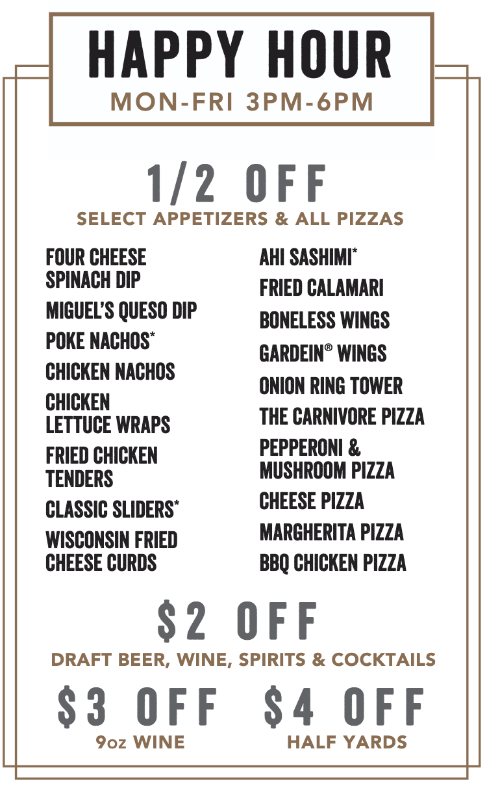
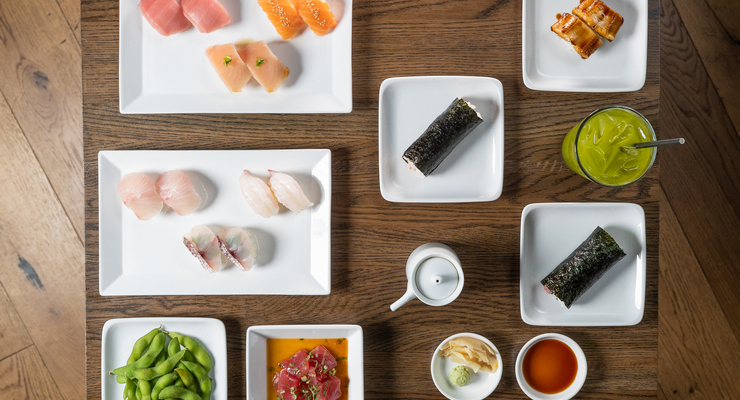

- Statebird Provisions, San Francisco, CA
- Mensho Ramen, San Francisco, CA
- Howlin Rays, Los Angeles & Pasadena, CA
- World Famous Hot Boys, multiple locations
- Vons Chicken, Sacramento, CA
- M Sushi Bistro, Lodi, CA
- Ini Ristorante, Fountain Valley, CA
- Maru Ramen Bar, Elk Grove, CA
- Yardhouse, multiple locations
- Sugarfish, multiple locations
Statebird Provisions holds one Michelin Star.
They have a rotating menu each month as some ingredients are seasonal.
This place is unique in that their style is similar to dim-sum style, where waiters walk around
with
food on a
platter and you can choose whether you want it and each item are priced differently.
From my experience, they have a lot of fusion food, such as mixing Mexican cuisine with Szechuan
spices.

Mensho Ramen, although does not have a Michelin Star, it is on the Michelin Guide. Expect to
wait in
a line for a little over an hour.
Lines start to form before they even open each day. Seating is very limited, but the food is
amazing. The ramen noodles are
very nice and bouncy, the broth is very flavorful, the pork chashu is perfectly tender.

Howlin Rays does hot chicken unlike any other hot chicken joint. No matter what spice level you
get,
their seasoning is perfect.
They also offer samples as you're ordering to ensure you can handle the spice before committing
to
it. They have chicken and waffles,
chicken sandwiches, chicken tenders, and even chicken wings.

World Famous Hot Boys is open late, as late as 3am on Fridays and Saturdays, perfect after a
long
night out. Their chicken and waffles and chicken sandwiches are delicious.
I recommend placing an order online to avoid their long lines.

Vons Chicken is Korean fried chicken. They have unique flavors you really wouldn't find anywhere
else, such as honey butter. But they
also have classic Korean flavors like garlic, soy, and yangnyeom. Despite tossing their wings in
sauce, their method of frying the chicken wings
keeps the wings crunchy. It's hard to find that at many other places.

M Sushi Bistro is probably the HIGHEST quality sushi you can find closest to Stockton. You'll be
able to tell the difference almost instantly.
It has always been consistently good. They also offer other dishes for those who aren't a big
fan of
sushi, such as stir fried udon noodles, which
are also amazing. They have a bone marrow appetizer that you spread onto a slice of lightly
toasted
bread yourself.

Ini Ristorante does fusion food amazingly. It is a fusion of Italian and Japanese. They have
pastas
and pizzas with the Japanese fusion of flavors.
The wait can be long, but you can book a reservation to avoid the wait time. Some days you can
even
book a reservation for the same day.

Maru Ramen earns a spot on this list, just not as high as Mensho because it's delicious but the
food
itself is not as elevated as Mensho.
Unlike many other ramen spots, they don't fill your bowl with a bunch of veggies to make your
bowl
look full. You genuinely get a good amount of broth, noodles, pork chashu,
and a perfectly soft boiled egg. Although this is a ramen spot, an item they serve that deserves
an
honorable mention is the pork belly fries. This is good
as an appetizer to share with the table, or as a meal on its own. It comes with fries, pork
belly
cooked in a soy glaze, a fried egg, topped with a spicy mayo sauce, and green onions.

Yardhouse has many locations all over, and if you haven't heard someone else mention it, you're
hearing it here...they have the BEST happy
hour deals. They have a select list of items you can select from that's HALF off. Their happy
hours
are M-F 3pm-6pm, but if you ever get a chance to make it out there,
I highly recommend it. I've ordered a table full of food, every single item tasted good, service
was
good, and the total was about $50, I was in disbelief.


Sugarfish is the closest you can get an omakase dinner without the $100+ price tag. Fortunately,
there are multiple locations and the 3 different locations I have gone to so far has been consistent every time. Sugarfish was my
introduction to the more expensive cuts of sushi, but I will say
it has not once disappointed me. For every location to be consistent in what they serve says a
lot.
This is also a no tipping establishment, so you don't have to
worry about that or feel awkward about it one bit.
